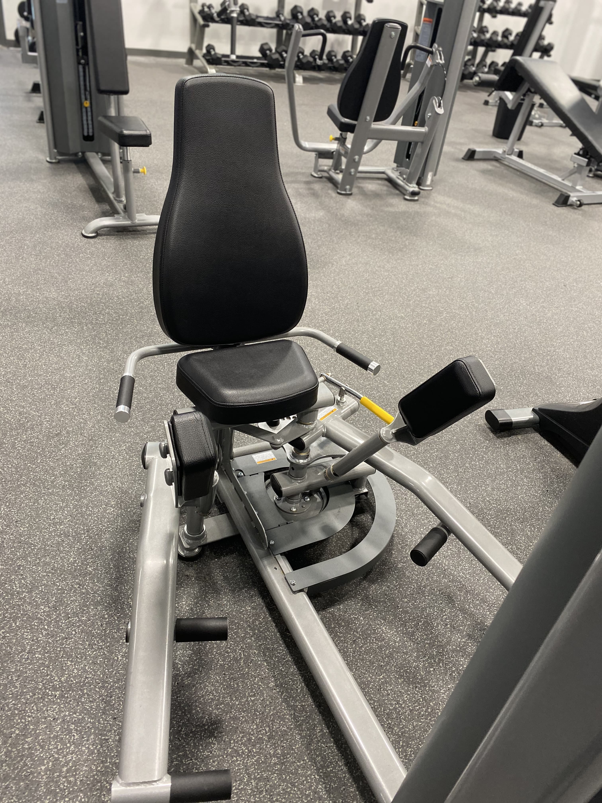

Ignite Fitness
Ignite Fitness
Adductor Machine

Safety Tips
- Warm up for 5-10 minutes
- Set the weight at a comfortable level
- To adjust how far the leg pieces are apart, lift up on the yellow lever and change the distance, then make sure the lever locks back into place.
Recommended Uses:
Inner Thigh

- Position thigh pads inside of the leg, above the knee.
- Grasp the handles and rest your back on the rear pad for support
- Bring your legs together then release them comfortably.
- Repeat step 3 until your desired number of reps is achieved
Outer Thigh
- Put the thigh pads against the leg, above the knee
- Grasps hand grips and use the rear pad for support
- Move legs outwards and bring them back
- Repeat step 3 until you have achieved your desired number of reps